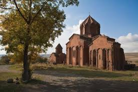

Phone +37477691820
Phone +37477691820

Marmasheni Ekexeci
Մարմաշենի վանքը Ախուրյանի շրջանի Վահրամաբերդ գյուղի հարավ-արևմտյան մասում՝ Ախուրյան գետի ձախ ափին գտնվող հուշակոթող է։ Վանքը կազմված է երկու շինությունից, գլխավոր՝ Կաթողիկե և կից փոքր եկեղեցիներից։ Գլխավոր եկեղեցին ըստ արձանագրության կառուցել է Վահրամ Պահլավունի հայրենասեր իշխանը 988-1029 թվականներին, երբ դեռ Անին Բագրատունիների ոստանն էր։ Այդ մասին է Վահրամ Պահլավունին եկեղեցու պատի վրա թողել է մի ընդարձակ արձանագրություն, որը պահպանվել է մինչ օրս։ Սելջուկյան արշավանքներից վանքը զգալի ավերվում է, սակայն 1225 թվականին Վահրամ Պահլավունու թոռներ Գրիգոր արքեպիսկոպոսը և նրա եղբայր Ղարիբը վերանորոգում են Կաթողիկեն։ Կոթողի հիմքում ընկած են հայ ազգային ճարտարապետությանը տիպիկ կառույցաձևեր՝ սլացիկ սյունախուրձեր, զույգ կիսասյուներ, որմնակամարներ, բազմանիստ թմբուկ, բուրգաձև ծածկ, մանրաքանդակներ, բարելիեֆներ և այլն։ Մայր եկեղեցու պատերը և ներսից, և դրսից պատված են սրբատաշ կարմրավուն տուֆով, իսկ հիմքային մասերը շարված են բազալտով։ Փոքր հուշարձանախումբը եղել է հայկական կրոնական ու մշակութային նշանավոր կենտրոն։ Մարմաշենի միջնադարյան վանքը գտնվում է Շիրակի մարզի Մարմաշեն գյուղից մոտ 2կմ հյուսիս-արևմուտք, Ախուրյան գետի ձախ ափին։ Բաղկացած է շինությունների երկու խմբից՝ Մեծ և Փոքր (կամ Վերին)։ Վանքի գլխավոր՝ Կաթողիկե եկեղեցին, ըստ հարավային պատի արձանագրության, կառուցել է իշխան Վահրամ Պահլավունին՝ 988-1029 թթ.-ին։ Սելջուկյան արշավանքներից Մարմաշեն վանքը զգալի ավերվել է։ 1225 թ.-ին Վահրամ Պահլավունու թոռներ Գրիգոր արքեպիսկոպոսը և նրա եղբայր Ղարիբը վերանորոգել են Կաթողիկեն։websites in training- Sirekan Avagyan